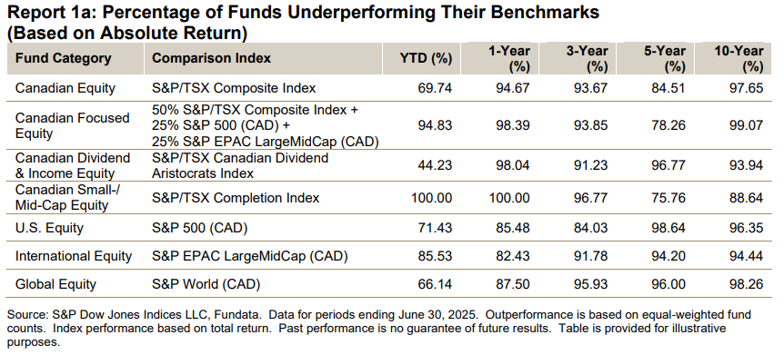
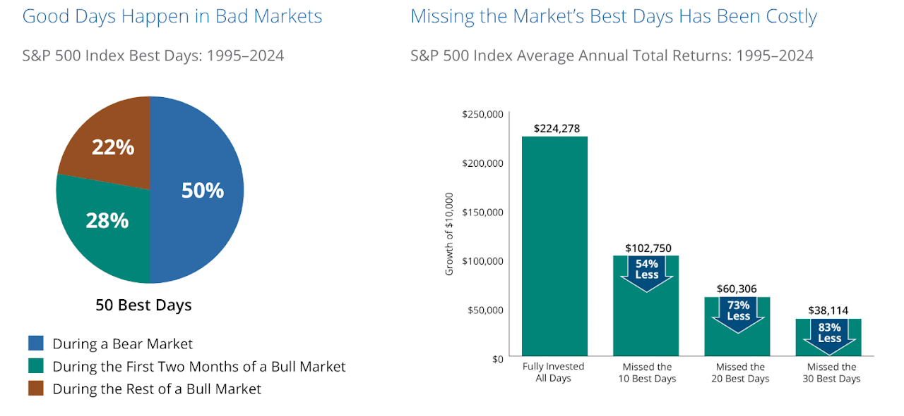
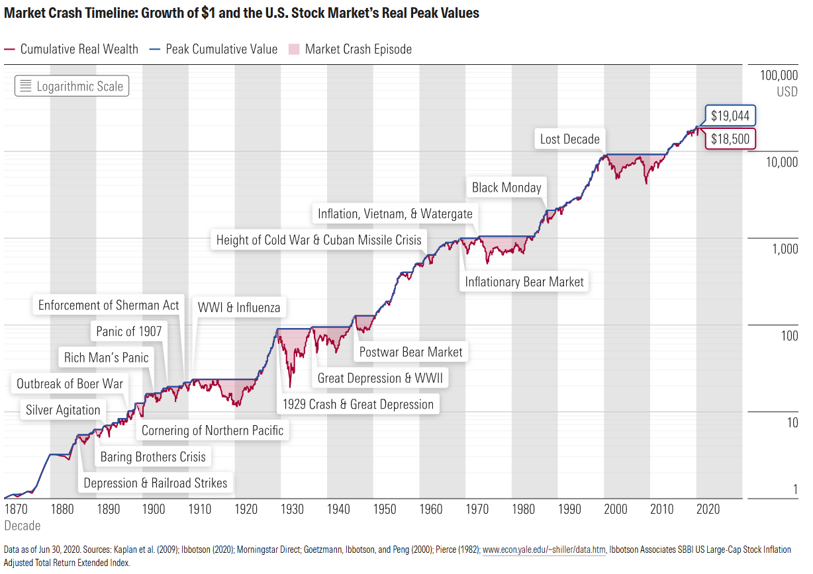
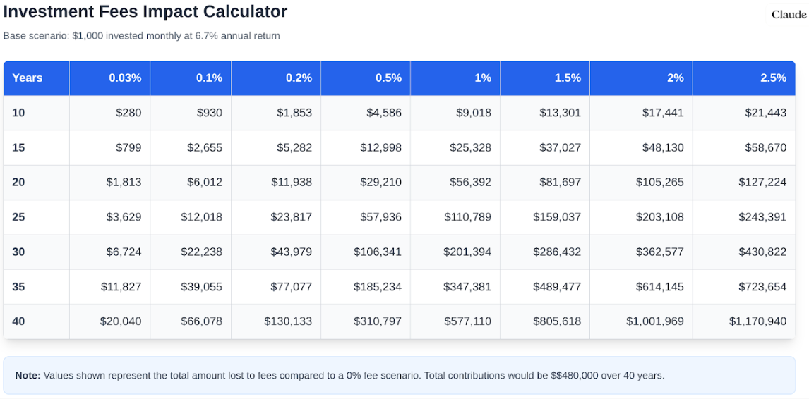
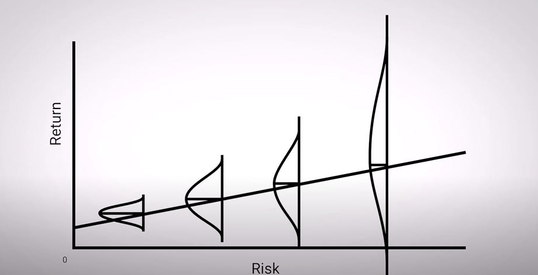

While investing is only a small part of a holistic financial plan, it is often focused on the most by many people. Here is a list of some of my investment principles to give you some insight on how I think about investment advice throughout the financial planning process.
(Click to expand on each point)
Decades of research show that, over the short and long term, passive strategies outperform nearly all active strategies. The majority of actively managed funds underperform their passive benchmarks, and this effect gets stronger the longer the time frame. Over a 10 year time-frame, nearly all actively managed funds underperform their passive counterparts.

Straightforward strategies are easier to understand, easier to follow, and more likely to succeed than complex ones.
Staying invested for the long term is more effective than trying to predict market movements. Consistency and patience are key to successful investing. Missing the market's best days are hugely detrimental to your long term returns, and the best market days are impossible to predict accurately and consistently, often happening during periods where the market is going down.

Investment decisions should be based on academic research and empirical data rather than market speculation, trends, or fear-driven reactions.
Markets generate endless commentary and predictions, but most of it is noise. Sound investing relies on evidence, not headlines.
Market downturns are a normal part of investing. From 2001 to 2008 to the COVID crash, history shows recoveries follow even the steepest declines. Investment plans are designed to ride out volatility and support long-term goals. A common phrase I hear is "this time is different," I assure you, this time is NOT different.

Investors are often their own worst enemies, making emotional decisions based on short-term market movements. A key role of a financial planner is to provide guidance and discipline during periods of market volatility. Doing nothing is sometimes the hardest thing an investor can do, but also the most important.
While anomalies exist, attempting to consistently outguess the market through stock-picking or market timing is a losing game. Focus on capturing market returns through broad diversification.
Fees, expenses, and taxes erode returns over time. Prioritize low-cost investment solutions, such as index funds and ETFs, and implement tax-efficient strategies.

The most important determinant of portfolio performance is asset allocation, not individual stock selection. A well-diversified portfolio should align with the client’s risk tolerance, goals, and time horizon.
Higher expected returns require taking on more risk, but risk should always be carefully assessed in the context of the client’s ability and willingness to bear it. High returns require high risk, but high risk does not always mean high returns. Risk management is key! Risk is not perfectly linear.

Spreading investments across asset classes, industries, and geographic regions minimizes the impact of individual asset volatility and improves long-term outcomes. Diversification is "the only free lunch" in investing.
There is no one-size-fits-all portfolio. Investment recommendations should be tailored to each client’s financial situation, objectives, values, and overall financial plan.